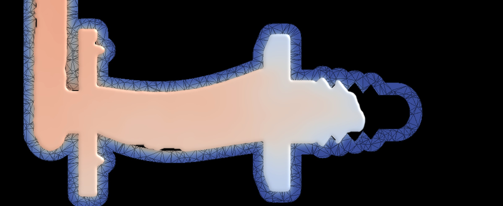
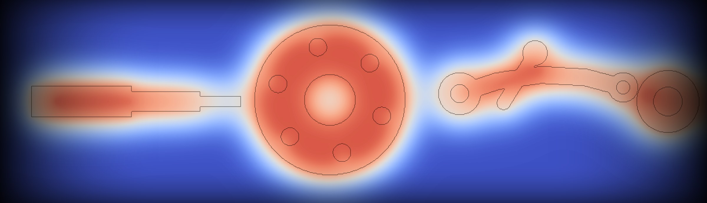

A casting is often right only after a few wrong ones.
Shrinkage, porosity and blow holes are still found the expensive way: by pouring metal, cutting the part open and trying again. Every rejected casting is metal, energy and time already spent. We are building models that learn the physics of solidification from data, so the right design and process settings can be chosen before the first pour.

Vision & mission
Vision
A foundation model for metal casting: one family of models that understands how any metal fills, cools and solidifies in any mould, across geometries, alloys and process conditions.
Mission
Help foundries cut trial pours, scrap and remelting by recommending gating and mould design, metal velocity, and pouring and mould temperatures before production begins.
Learn from physics
We train on carefully generated simulation data where geometry, mesh, process settings and transient temperature fields stay linked, case by case.
Cover many metals
Starting with aluminium LM6 and moving to other aluminium alloys, copper, bronze and ferrous metals, with the alloy treated as one more process parameter.
Work with simulation
Tools such as MAGMASOFT, ProCAST and POLYGONSOFT show what happens in a design you already have. We aim to help choose a good design to begin with.

Recognition for our first open benchmark
“LM6-CastBench: A Geometry-Aware Simulation Dataset for Transient Thermal Prediction in LM6 Sand Casting”
Our paper has been accepted for a poster presentation at the AIDaR Workshop (AI Data Readiness for Scientific Discovery) at NeurIPS 2026, taking place on December 12 in Paris.
LM6-CastBench is an open simulation dataset for geometry-aware learning of transient thermal fields in LM6 aluminium sand casting. Each case keeps its CAD geometry, mesh, process settings and time-resolved temperatures together, with fixed geometry-level splits so new models can be compared fairly.
Dataset & code on GitHub (CC-BY-4.0) ↗ Read the story →
Models are only convincing once they meet real castings.
LM6, conduction
Aluminium LM6 with a conduction-based thermal model, varying pouring and mould temperature. Mould filling and direct defect prediction are not yet included.
More physics, more metals
Bronze, copper, other aluminium alloys and ferrous metals; gating and riser variations; mould filling coupled with solidification; links to shrinkage and porosity.
Validation on real pours
Checking predictions against real castings and learning which defects and parameters matter most on the shop floor. Talk to us →